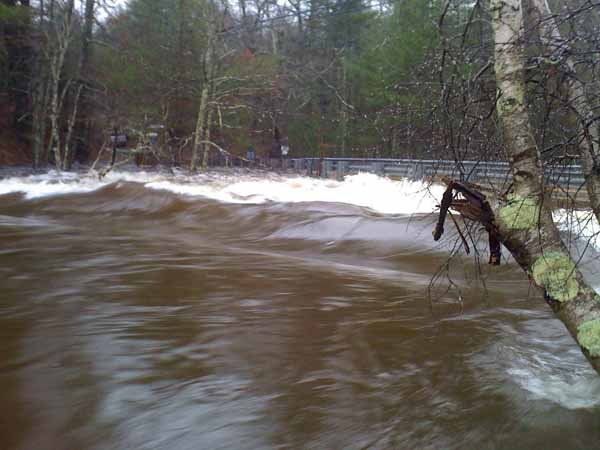
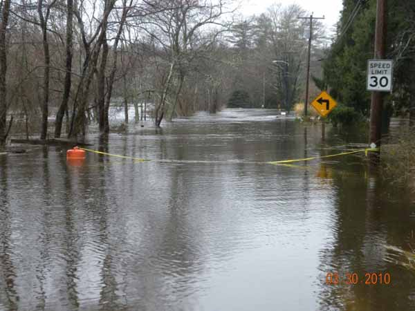

PAWCATUCK WATERSHED FLOOD RESILIENCY AND MANAGEMENT PLAN PROJECT
Funded by the Hurricane Sandy Coastal Resiliency Competitive Grant Program
through the National Fish and Wildlife Foundation
Overview
Problem and Background
Hurricane Sandy Coastal Resiliency Grant Program
Final Report
Wood-Pawcatuck Watershed Flood Resiliency Management Plan
Appendix A - Baseline Assessment
Appendix B - Steering Committee Meetings
Appendix C - Watershed Plan Survey
Appendix D - Community Meetings
Appendix E - Subwatershed Maps
Appendix F - Town Summary Sheets
Appendix G - Dams, Bridges, Culverts Assessment
Appendix H - Geomorphic Assessment
Appendix I - River Corridor Plan
Appendix J - River Corridor Restoration Concept Sheets
Appendix K - Land Use Policy and Regulations
Appendix L - Wetlands Assessment
Appendix M - Green Infrastructure
October Community Meetings Materials
Community Meeting Slideshow
Subbasin Maps
Overview
In 2014 WPWA was awarded a $720,000 grant to develop a watershed wide management plan for flood resiliency. This project will address the problems faced by cities and towns in the Wood-Pawcatuck Watershed caused by extreme weather events. The Hurricane Sandy Coastal Resiliency Competitive Grant Program supports projects, such as this, that reduce communities’ vulnerability to the growing risks from coastal storms, sea level rise, flooding, erosion and associated threats through strengthening natural ecosystems that also benefit fish and wildlife. The program, funded by the Hurricane Sandy disaster relief appropriation through the Department of the Interior (DOI), is administered by NFWF. The two year project is expected to be completed in early 2017.
The Pawcatuck Watershed Management Plan will be researched and drafted by the engineering firm of Fuss and O'Neil, who have previously designed fish passage projects on the Pawcatuck River. The project will involve assessment of existing conditions and evaluation of what can be done to avoid or midigate future impacts from catastrophic storms. Meetings with all the watershed communities and interested stakeholders will be held before, during, and after the plan is drafted. This project will provide a management plan which includes a list of actions and tools that cities and towns can use to protect themselves from future weather related events. The RI Department of Environmental Management will work closely with WPWA to see that the management plan meets the needs of the watershed. The goal of the project is to have a finished product that RIDEM and local communities can adopt and begin using immediately.

Problem and Background
The Pawcatuck River has suffered extensive flooding, and flood related damages most extensively by super storm Sandy and the historic March 2010 Flood. Significant flood damage has occurred in both Connecticut and Rhode Island. Water management both from a quantity and quality perspective is an important consideration for the Pawcatuck River Watershed. The Army Corps of Engineers (ACOE) has performed a Reconnaissance Study to evaluate the nature of the flooding, the magnitude of the flood damage, and measures that may exist to mitigate this damage. A follow-up ACOE feasibility study is being funded through a grant from Hurricane Sandy relief funds.The RI Nature Conservancy also received a Hurricane Sandy Coastal Resiliency Grant to reduce Pawcatuck River flooding impacts and improve fish passage through the removal of the White Rock Dam in 2015. National Oceanographic Atmospheric Agency (NOAA) and the Natural Resources Conservation Service (NRCS) have invested significant funds in the removal of a dam and the restoration of fish passage at several other dams in the upper Pawcatuck River. In addition several studies relating to water supply and water quality have been funded by the State of Rhode Island. The federal and state governments have recognized the Pawcatuck River and its watershed as a highly valuable watershed worth preserving and protecting and are expending a substantial sum of money on this watershed. This project will complement those projects and further identify opportunities to protect and enhance natural resources, but with a focus on reducing vulnerability to future storm relates damages.

Hurricane Sandy Coastal Resiliency Grant Program
WPWA will utilize the grant to develop a comprehensive flood and storm damage resiliency and watershed management plan that will focus on stormwater and flood management in a way that mitigates future flooding concerns from existing and proposed new land use, but also provides the benefit of protecting water quality and aquatic habitat. The project will evaluate a variety of alternatives to determine which are most cost effective, inclugint mitigation measures that are beyond the scope and focus of the Army Corps Flood Protection Feasibility study. This can be accomplished in a variety of ways that will be evaluated. Objectives of the project will be to provide tools to the community that can help them develop greater resiliency to impacts of future storms and climate change including resistance to greater precipitation events resulting in larger flood events, more severe hurricanes and tropical storms resulting in greater occurrence of inland flooding, dam failure, stream and river erosion, and channel restricting sedimentation events. These tools will be developed in such a way that community resiliency can be strengthened by enhancement of natural systems. The community includes the property owners, land developers and Local and State governments. The watershed planning document will provide the following:
- Identification of known flooding/erosion/sedimentation problems in the watershed, building on the FEMA Flood Insurance Studies and the work that the Army Corps has already done for the larger urban flooding areas of Westerly and focusing on the stormwater management in the upper watershed. The Corps states in their reconnaissance report that stormwater management is a critical component in the success of flood management in the watershed.
- Identification of all dams in the watershed and a preliminary feasibility assessment of the potential for their removal to eliminate the risk of failure during future storms and the subsequent damages resulting. This would complement the work being done by the USFWS on the removal of the White Rock Dam, and the WPWA on the removal of a dam on the upper Pawcatuck River.
- Identification of hydraulic structures in the watershed, including bridges and culverts, and an assessment of their flood conveyance capacity and the potential flooding or road damage that they cause if they are undersized. Identification of improvement alternatives including increased culvert sizes, to mitigate flooding and erosion damages. This evaluation would also include the assessment of aquatic connectivity. The culverts or bridges that are both undersized and restricting hydraulic connectivity are an intersection of two issues that can be addressed simultaneously with the same action and would provide a natural systems enhancement while strengthening community resiliency.
- Identification of opportunities for Green infrastructure in the upland to reduce stormwater runoff flows to mitigate current flood flows and to guide development in a manner that does not increase the current hydrologic response of the watershed in flow peaks, duration and volume of flood flows.
- Identification of areas where sediment removal could result in greater flood conveyance capacity and/or flood storage resulting in reduced flood elevations and/or peak flows.
- Fluvial geomorphological assessment of the stream and river systems in the watershed, to identify the classification of the watercourses and the likelihood that the stream channels will migrate over time due to natural channel processes, increased flow from the watershed, or man-made modifications to the hydraulic system. Over time, streams meander laterally, and fill or degrade vertically as they adjust to their water levels, sediments, and slope. Stream channels may change suddenly and catastrophically. The area of active stream channel movement is called the Fluvial Erosion Hazard Zone. Identification of the Fluvial Hazard Zones in the watershed would provide valuable information to land owners and the Town to allow for planning of more resilient land use in the future.
The watershed management plan will provide tools to plan wisely for land use initiatives in the watershed including development and redevelopment activities. It will be written for implementation by the private sector in selecting lands that are free of specific hazards or that are valuable to be developed in a specific way that would minimize hazard potential and enhance resiliency. Similarly some land may be so sensitive as to be deemed good candidates for preservation by the community and a plan for acquisition can be developed with the property owner. This plan will be written as well for use by municipalities as zoning, regional growth nodes, open space preservation, and at Statewide Planning for land-use management initiatives.
The success of this watershed management planning effort is dependent upon the development of a plan that reflects the consensus of the watershed Towns and landowners. The only way that this can be accomplished is through a well-facilitated process where information is shared throughout the development of the plan and interested parties are given ample opportunities to be informed, to ask questions and to contribute to the process. The objective at the completion of the management plan development is to have a plan that reflects the consensus of the Towns and whose recommendations are logical and clearly outlined as to how they can be implemented. WPWA has a track record of working cooperatively and respectfully with land owners and the communities within the watershed.
Steering Committee Materials:
Kickoff Meeting Notes March 26, 2015
Kickoff Meeting Presentation Slides March 26, 2015
Wood-Pawcatuck Steering Committee Meeting May 21 2015
Proposed Technical Assessment Methods and Geographic Priorities
Resources:
Pawcatuck Flood Resiliency Watershed Plan Slide Presentation by Erik Mas of Fuss and ONeil
Coastal Fellows Poster: Fluvial geomorphic and flood hazard assessment for the Wood-Pawcatuck Watershed created by Nate Lukas and Zack Valerio